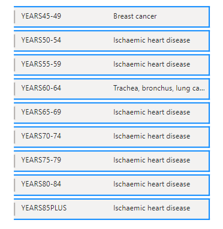
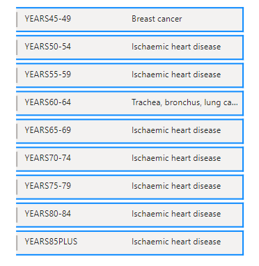

Background:
In this Project I wanted to find out – what are the leading causes of death in Israel and worldwide? I believe that understanding the causes can help us gain knowledge and know especially what we should avoid.Cleaning the Data:
I got the Data from the WHO (world Health Organization) Website. I Imported the Data as an OData feed, then I used Power Query to remove unnecessary columns and append the different queries to one table. Then I used Xlookup function to divide the 131 causes into 22 groups (for example: lung cancer, liver cancer and all other types of cancer are all under “malignant neoplasms”). I imported the file to SQL server to analyze the data, then imported my queries to Power BI to create the visualization.
Conclusions:
1. The two major causes of death in Israel are malignant neoplasms and cardiovascular diseases. Since the year 2000 the number of deaths from cardiovascular diseases has been declining. The number of deaths from malignant neoplasms is also declining, but in much slower rate (see Charts below).2. The Top two causes of death for men are: Ischaemic heart disease and trachea, bronchus and lung cancers (highly related to smoking). For women its Ischaemic heart disease and Alzheimer.
3. It seems that Israel is doing better than the other countries under review, with less deaths per 100K population from malignant neoplasms and cardiovascular diseases.
4. From ages 25 to 39 the leading cause of death is “self-harm”, meaning suicide.
 
